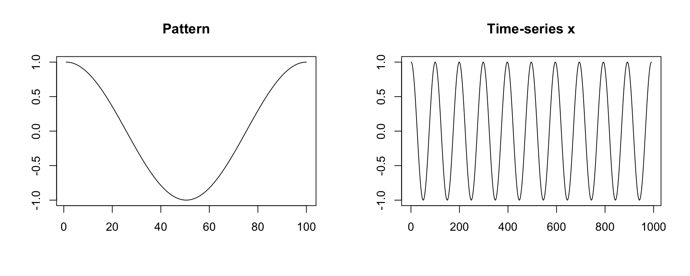
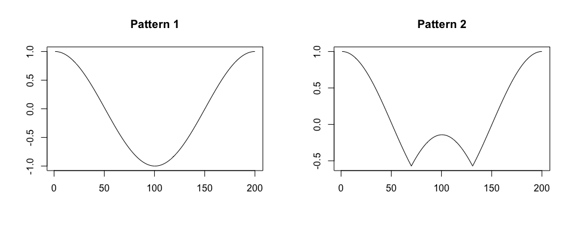
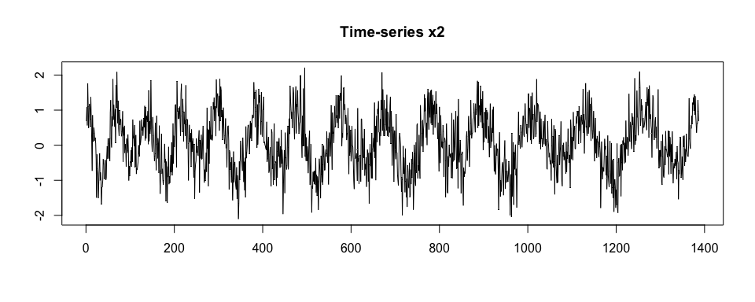

Overview
The adept package implements ADaptive Empirical Pattern Transformation (ADEPT) method1 for pattern segmentation from a time-series. ADEPT is optimized to perform fast, accurate walking strides segmentation from high-density data collected with a wearable accelerometer during walking. The method was validated using data collected with sensors worn at left wrist, left hip and both ankles.
Example 1
We simulate a time-series x; we assume that x is collected at a frequency of 100 Hz, there is one pattern of a fixed duration of 1.0 seconds present in x, and there is no noise in collected data.
true.pattern <- cos(seq(0, 2 * pi, length.out = 100))
x <- c(true.pattern[1], replicate(10, true.pattern[-1]))
par(mfrow = c(1,2), cex = 1)
plot(true.pattern, type = "l", xlab = "", ylab = "", main = "Pattern")
plot(x, type = "l", xlab = "", ylab = "", main = "Time-series x")
We segment pattern from data. We assume that a perfect template is available. We use a grid of potential pattern durations of {0.9, 0.95, 1.03, 1.1} seconds; the grid is imperfect in a sense it does not contain the duration of the true pattern used in x simulation.
library(adept)
segmentPattern(
x = x,
x.fs = 100,
template = true.pattern,
pattern.dur.seq = c(0.9, 0.95, 1.03, 1.1),
similarity.measure = "cor",
compute.template.idx = TRUE)
#> tau_i T_i sim_i template_i
#> 1 4 95 0.9987941 1
#> 2 98 103 0.9992482 1
#> 3 202 95 0.9987941 1
#> 4 297 103 0.9992482 1
#> 5 399 95 0.9987941 1
#> 6 495 103 0.9992482 1
#> 7 597 95 0.9987941 1
#> 8 697 95 0.9987941 1
#> 9 792 103 0.9992482 1
#> 10 894 95 0.9987941 1The segmentation result is a data frame, where each row describes one identified pattern occurrence:
-
tau_i- index ofxwhere pattern starts, -
T_i- pattern duration, expressed inxvector length, -
sim_i- similarity between a pattern andx, -
template_i- index of a pattern template best matched to a pattern in the time-seriesx(here: one pattern template was used, hence alltemplate_i’s equal 1).
We then assume a grid of potential pattern durations which contains the duration of the true pattern used in data simulation. A perfect match (sim_i = 1) between a time-series x and a template is obtained.
segmentPattern(
x = x,
x.fs = 100,
template = true.pattern,
pattern.dur.seq = c(0.9, 0.95, 1, 1.03, 1.1),
similarity.measure = "cor",
compute.template.idx = TRUE)
#> tau_i T_i sim_i template_i
#> 1 1 100 1 1
#> 2 100 100 1 1
#> 3 199 100 1 1
#> 4 298 100 1 1
#> 5 397 100 1 1
#> 6 496 100 1 1
#> 7 595 100 1 1
#> 8 694 100 1 1
#> 9 793 100 1 1
#> 10 892 100 1 1Example 2
We simulate a time-series x; we assume that x is collected frequency of 100 Hz, there are two patterns of various duration present in x, and there is noise in collected data.
Then, we generate x2 as a noisy version of x.
true.pattern.1 <- cos(seq(0, 2 * pi, length.out = 200))
true.pattern.2 <- true.pattern.1
true.pattern.2[70:130] <- 2 * true.pattern.2[min(70:130)] + abs(true.pattern.2[70:130])
x <- numeric()
for (vl in seq(70, 130, by = 10)){
true.pattern.1.s <- approx(
seq(0, 1, length.out = 200),
true.pattern.1, xout = seq(0, 1, length.out = vl))$y
true.pattern.2.s <- approx(
seq(0, 1, length.out = 200),
true.pattern.2, xout = seq(0, 1, length.out = vl))$y
x <- c(x, true.pattern.1.s[-1], true.pattern.2.s[-1])
if (vl == 70) x <- c(true.pattern.1.s[1], x)
}
set.seed(1)
x2 <- x + rnorm(length(x), sd = 0.5)
par(mfrow = c(1,2), cex = 1)
plot(true.pattern.1, type = "l", xlab = "", ylab = "", main = "Pattern 1")
plot(true.pattern.2, type = "l", xlab = "", ylab = "", main = "Pattern 2")


We segment x. We assume a perfect grid of potential pattern duration, {0.7, 0.8, 0.9, 1.0, 1.1, 1.2, 1.3} seconds.
segmentPattern(
x = x,
x.fs = 100,
template = list(true.pattern.1, true.pattern.2),
pattern.dur.seq = seq(0.7, 1.3, by = 0.1),
similarity.measure = "cor",
compute.template.idx = TRUE)
#> tau_i T_i sim_i template_i
#> 1 1 70 1 1
#> 2 70 70 1 2
#> 3 139 80 1 1
#> 4 218 80 1 2
#> 5 297 90 1 1
#> 6 386 90 1 2
#> 7 475 100 1 1
#> 8 574 100 1 2
#> 9 673 110 1 1
#> 10 782 110 1 2
#> 11 891 120 1 1
#> 12 1010 120 1 2
#> 13 1129 130 1 1
#> 14 1258 130 1 2We segment x2.
segmentPattern(
x = x2,
x.fs = 100,
template = list(true.pattern.1, true.pattern.2),
pattern.dur.seq = seq(0.7, 1.3, by = 0.1),
similarity.measure = "cor",
compute.template.idx = TRUE)
#> tau_i T_i sim_i template_i
#> 1 1 70 0.8585451 1
#> 2 138 80 0.7624002 1
#> 3 218 80 0.7025577 2
#> 4 297 90 0.8500864 1
#> 5 390 80 0.6931671 2
#> 6 469 110 0.8286013 1
#> 7 579 90 0.6373846 2
#> 8 668 120 0.8027177 1
#> 9 787 100 0.6666713 2
#> 10 888 130 0.7894766 1
#> 11 1017 110 0.6599280 1
#> 12 1129 130 0.7938183 1
#> 13 1267 120 0.7655408 2We now use x.adept.ma.W argument to smooth x2 before similarity matrix computation in the segmentation procedure (see ?segmentPattern for details). We also assume a more dense grid of potential pattern duration. We observe that sim_i values obtained are higher than in the previous segmentation case.
par(mfrow = c(1,1), cex = 1)
plot(windowSmooth(x = x2, x.fs = 100, W = 0.1),
type = "l", xlab = "", ylab = "", main = "Time-series x2 smoothed")
segmentPattern(
x = x2,
x.fs = 100,
template = list(true.pattern.1, true.pattern.2),
pattern.dur.seq = 70:130 * 0.01,
similarity.measure = "cor",
x.adept.ma.W = 0.1,
compute.template.idx = TRUE)
#> tau_i T_i sim_i template_i
#> 1 1 70 0.9865778 1
#> 2 70 70 0.9533684 2
#> 3 139 79 0.9683054 1
#> 4 217 80 0.9748040 2
#> 5 296 94 0.9802473 1
#> 6 391 82 0.9462213 2
#> 7 472 106 0.9855837 1
#> 8 578 93 0.9608881 2
#> 9 670 115 0.9887225 1
#> 10 784 107 0.9562694 2
#> 11 896 113 0.9734575 1
#> 12 1008 127 0.9703118 1
#> 13 1134 116 0.9606235 1
#> 14 1266 122 0.9593345 2Vignettes
Vignettes are available to better demonstrate package methods usgae.
Vignette Introduction to adept package introduces ADEPT algorithm and demonstrates the usage of
segmentPatternfunction which implements ADEPT approach. Here, we focus on examples with simulated data.-
Vignette Walking strides segmentation with adept provides an example of segmentation of walking strides (two consecutive steps) in sub-second accelerometry data with
adeptpackage. The exemplary dataset is a part of theadeptdatapackage. We demonstrate that ADEPT can be used to perform automatic and precise walking stride segmentation from data collected during a combination of running, walking and resting exercises. We introduce how to segment data:- with the use of stride templates that were pre-computed based on data from an external study (attached to
adeptdatapackage), - by deriving new stride templates in a semi-manual manner.
- with the use of stride templates that were pre-computed based on data from an external study (attached to
Karas, M., Straczkiewicz, M., Fadel, W., Harezlak, J., Crainiceanu, C., Urbanek, J.K. Adaptive empirical pattern transformation (ADEPT) with application to walking stride segmentation, Submitted to Biostatistics, 2018.↩